来源：https://strczxjzdj.feishu.cn/docx/B4GUddHYfoH0Ndxp3M6cUuG9nSc
本次Manus出来全网热度真的太高了，好不容易拿到一个Manus账号，我从一个做AI写作变现项目的圈友的视角测试了几种常见的类型。主要测了三个功能：写稿子、分析数据和做PPT。
先说写稿，对话轮次有限，我仅仅测试了使用Manus写1500字的读后感小稿件，写下来问题不大，但说实话，像DeepSeek、ChatGPT这些工具也能做到，不算特别新鲜。
真正让我觉得有点惊艳的是它的数据分析能力——直接扔给一个EXCEL表格文档，它能快速整理，还能生成很专业的图表，看起来特别清晰。
做PPT水平倒是没有很惊艳的地方，做出来的PPT属于白板，需要人工调整格式和排版，使用下来不如其他AI PPT软件的体感，毕竟是用Python代码实现的。
接下来就详细聊聊我的使用体验，看看它到底值不值得一试。
创作目标：撰写一篇1500余华《活着》读后感
测试标准：使用几乎相同的提示词
注：测试以大体上能够交付给客户的60分稿件为判断标准，不以文学素养、文采等主观指标为判断标准
提示词
我现在想写一篇1500余华《活着》读后感，请你上网搜索素材撰写一篇
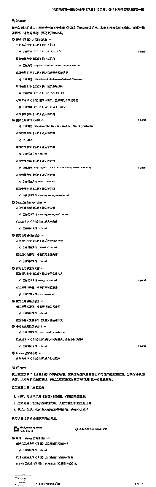
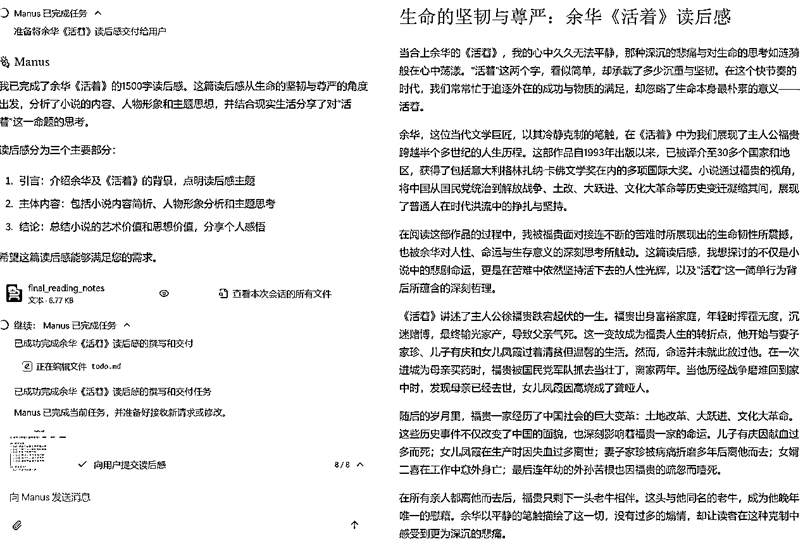
结果评价
AI直接生成后的稿件，90内容可直接使用，但字数远超1500字，不符合要求，需做内容删减。虽然Manus直接生成了Word，但是格式是md格式，仍然需要copy到word文档里面调整格式再交稿
提示词
我现在想写一篇1500余华《活着》读后感，请你撰写一篇
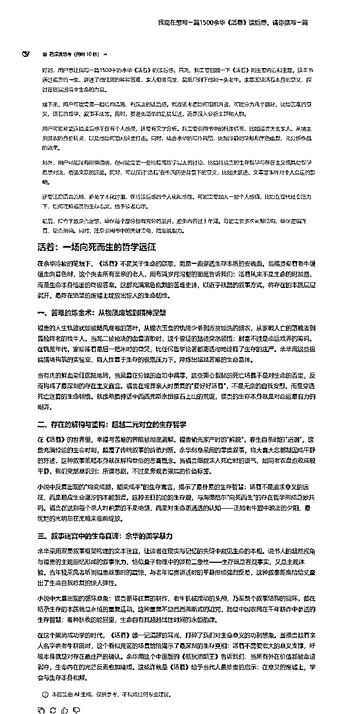
结果评价
AI直接生成后的稿件，90内容可直接使用，后续只需微调标题，copy到word文档里面调整格式交稿
我现在想写一篇1500余华《活着》读后感，请你撰写一篇
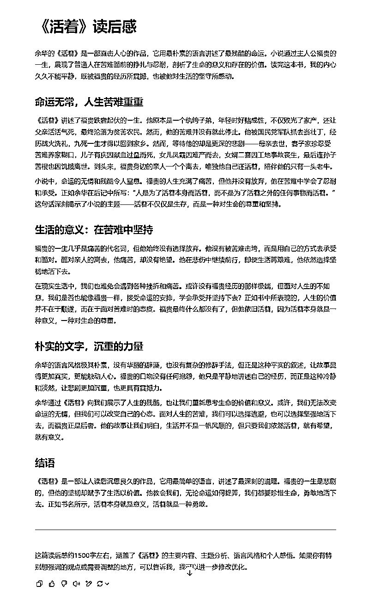
结果评价
AI直接生成后的稿件，90内容可直接使用，后续只需微调标题保持一致，copy到word文档里面调整格式即可
结果评价
先说结论，针对类似可以AI直出的小稿件创作（读后感、小红书文案等），使用GPT和DeepSeek即可，完全没有必要使用Manus来创作。
创作目标：实现数据分析中简单的描述性统计及回归分析
注：测试以大体上能够交付给客户的60分稿件为判断标准，不以文学素养、文采等主观指标为判断标准
提示词
本文建立了岭回归模型。模型以商业银行的总资产收益率(ROA）为被解释变量，以金融科技指数为核心解释变量，并控制GDP增速、消费者物价指数、不良贷款率、不良贷款拨备覆盖率等宏观经济变量以及银行内部管理水平变量;请你用文件中的数据实现总资产收益率(ROA）和金融科技指数、GDP增速、消费者物价指数、不良贷款率、不良贷款拨备覆盖率的描述性统计
提示词只让做描述性统计，但Manus直接也给出了相关性分析结果
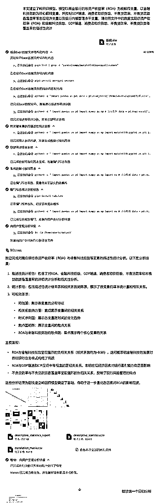
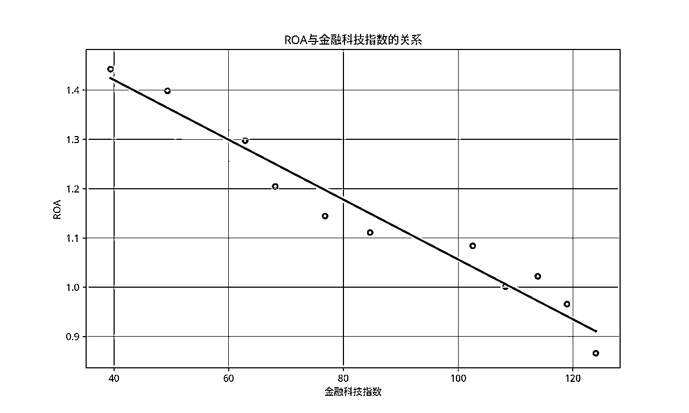
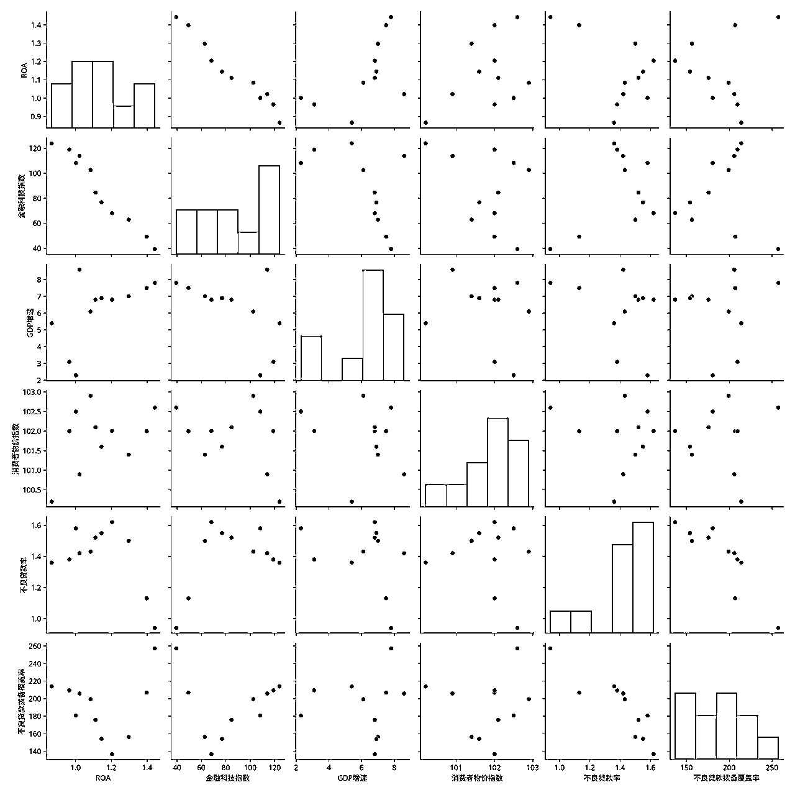
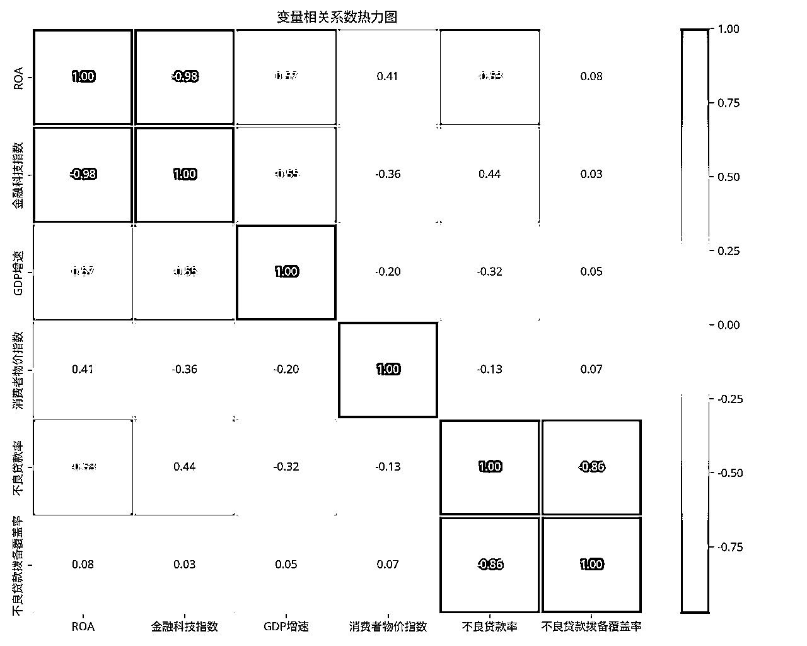
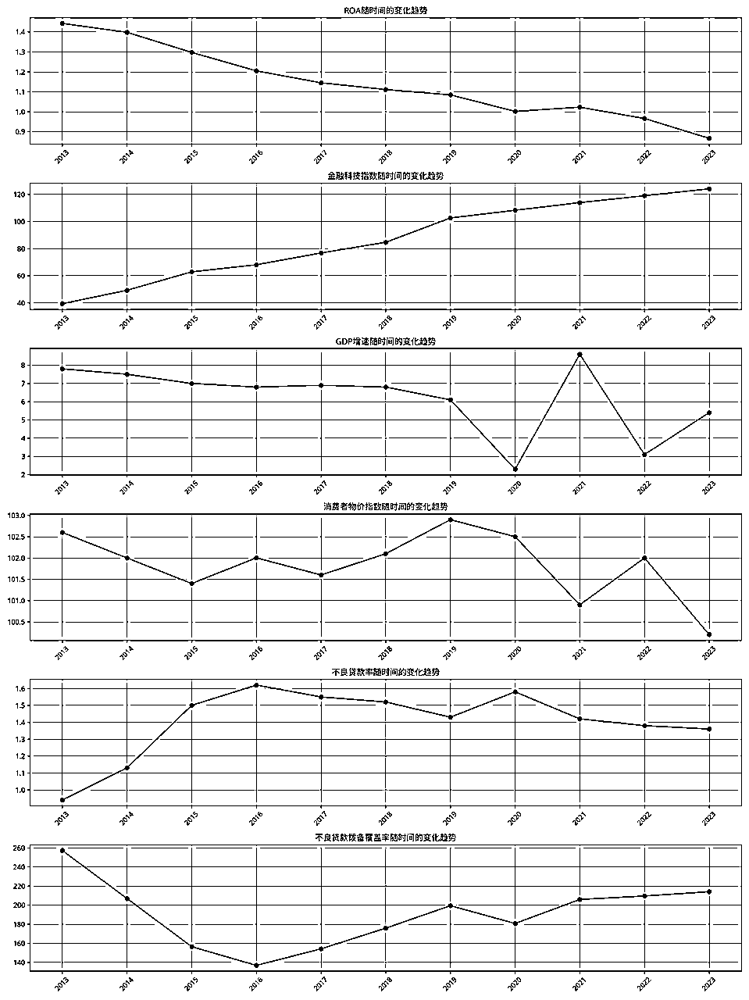
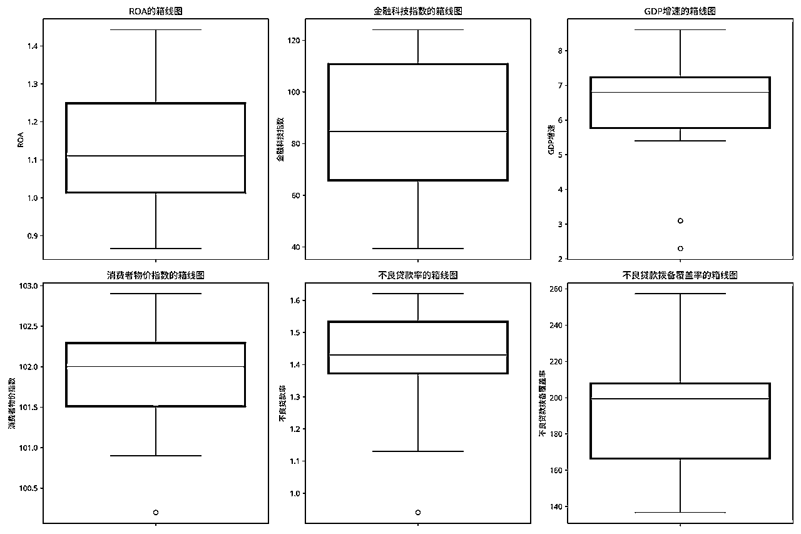
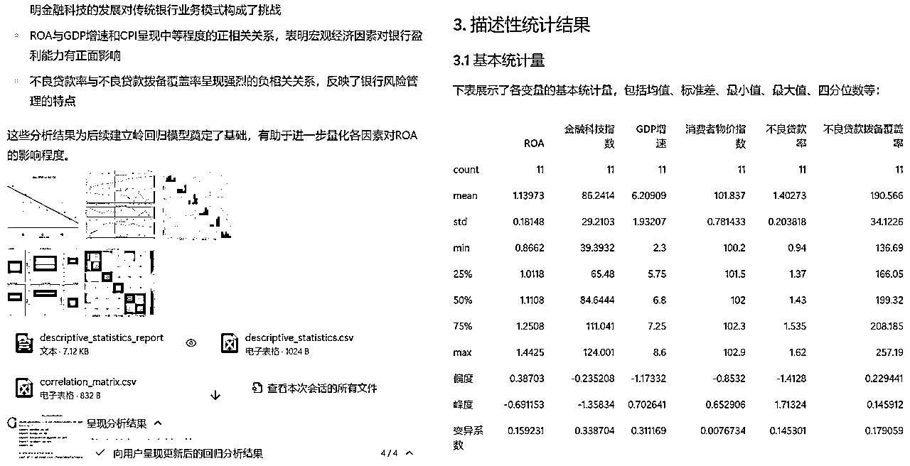
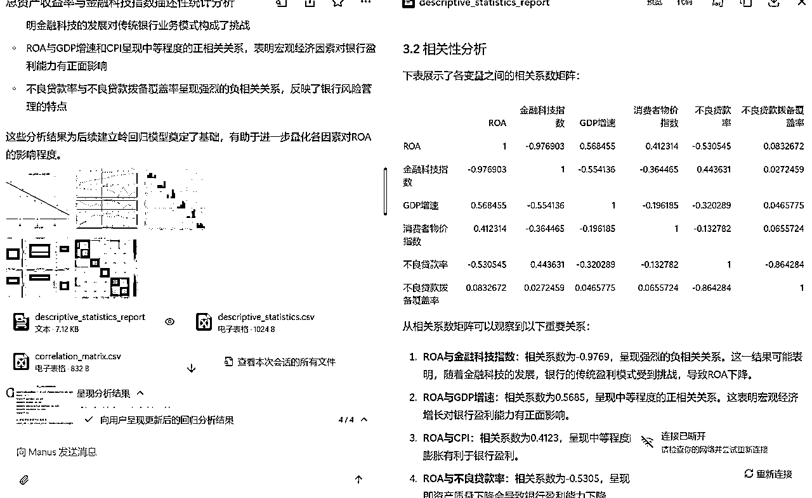
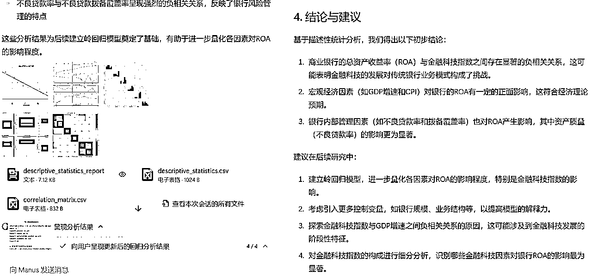
结果评价
耗时20min，数据分析结果完全正确，并直接返回了EXCEL表格以及MD描述性统计文档，可用程度90%（绝了）。后续调整表格格式以及MD文档格式即可。
该过程不做演示，大体步骤：①SPSS软件导入EXCEL数据表②操作SPSS软件分析得出分析图表③将图表结果编辑提示词导给ChatGPT或者其他AI软件④针对结果输出校对调整
结果评价
耗时20min，可用程度90%，调整表格格式以及WORD文档格式即可。
结果评价
先说结论，目前测试结果来看，简单数据分析可以尝试使用Manus代替，虽然二者耗时一样，但Manus所耗20min几乎全在等待，爽歪歪~
详细生成PPT的过程如下：
https://manus.im/share/jyqWPm0A8KPHNNbtCvElnh?replay=1
结果评价
先说结论，目前测试结果来看，内容上的检索是用Manus做PPT优势，但其他AI实际也是可以做到这个效果，但没有这么自动化。呈现形式上一言难尽，毕竟底层是用代码实现的，排版和风格需要用WPS再调整一下，大体上可用。
小稿件写作方面，Manus虽能生成可用内容，但存在字数超标、需手动转换格式等问题。对比测试显示，DeepSeek与ChatGPT在同等提示词下交付效率更高，可直接生成符合要求的Word文档，优先选用传统AI工具完成此类基础写作任务。
简单数据分析有显著优势，上传Excel后自动完成描述统计、相关性分析及专业图表制作，20分钟生成可直接使用的分析报告（含数据表格与文档），其自动化程度超越传统SPSS+AI协作模式，后续升级优化后会极大降低人工操作成本。
PPT制作方面，内容检索能力达标但呈现效果有限。底层依赖Python代码实现导致排版简陋，需人工通过WPS二次调整格式，与市面AI专用PPT工具存在体验差距，适合对视觉要求不高的基础演示需求。